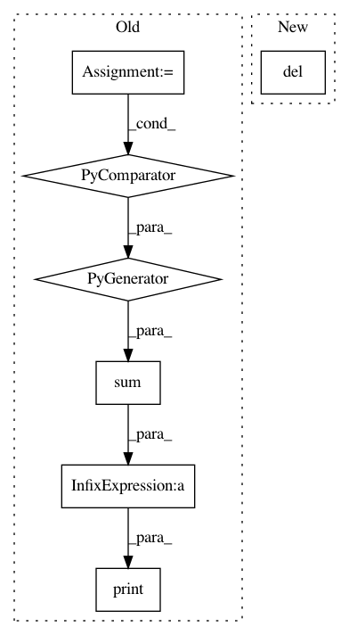

06298716dc48db52f69496e4248927f90925ee65,examples/inverse/plot_mixed_source_space_inverse.py,,,#,22
Before Change
// Visualize the source space.
src.plot(subjects_dir=subjects_dir)
n = sum(src[i]["nuse"] for i in range(len(src)))
print("the src space contains %d spaces and %d points" % (len(src), n))
//////////////////////////////////////////////////////////////////////////////////////////////////////////////////////////////////////////////////////////////
// Viewing the source space
// ------------------------
After Change
fname_evoked, fname_trans, src, fname_bem,
mindist=5.0, // ignore sources<=5mm from innerskull
meg=True, eeg=False, n_jobs=1)
del src // save memory
leadfield = fwd["sol"]["data"]
print("Leadfield size : %d sensors x %d dipoles" % leadfield.shape)
In pattern: SUPERPATTERN
Frequency: 3
Non-data size: 7
Instances
Project Name: mne-tools/mne-python
Commit Name: 06298716dc48db52f69496e4248927f90925ee65
Time: 2020-10-22
Author: larson.eric.d@gmail.com
File Name: examples/inverse/plot_mixed_source_space_inverse.py
Class Name:
Method Name:
Project Name: KaiyangZhou/deep-person-reid
Commit Name: b88d36cd9c8056e15607a40f5d10a9072ab84b22
Time: 2018-07-06
Author: k.zhou@qmul.ac.uk
File Name: train_vidreid_xent.py
Class Name:
Method Name: main
Project Name: KaiyangZhou/deep-person-reid
Commit Name: b88d36cd9c8056e15607a40f5d10a9072ab84b22
Time: 2018-07-06
Author: k.zhou@qmul.ac.uk
File Name: train_imgreid_xent.py
Class Name:
Method Name: main